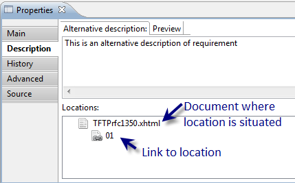

- REFERENCE attribute type
-
- is a special attribute type of requirements, virtual nodes and test purposes, which allows to link its node
to some other node of the same 'Requality project' catalog. 'REFERENCE' attribute
could be added in 'Properties'
view in 'Main' tab in 'Attributes' table. It's a usual attribute of 'REFERENCE' type,
that has a value - target node to link to.

The name of this attribute is the name of the link.
The nodes linking is represented in 'Requality Links Explorer' view.
In this view links are available in both sides – both from node with created attribute:

and from linked node indicated in the 'Value' field of the REFERENCE attribute of first node:

- Reference, reference between the nodes of requirement tree
-
- is a unidirectional named relationship between two nodes in the Requality project requirements tree. The
link originates from the referencing node and enters the target node. It is set in the target node's attribute
table as an attribute of type 'REFERENCE'
and is displayed for both nodes (referring and target) in the
'Requality Links Explorer' window
(for the referencing node as an outgoing link, for the target node as an incoming link). The name of this
attribute is the name of the outgoing link in the referencing node and, unless otherwise specified in
the project properties, is the name of the incoming link in the target node. When a new link is created,
the name of the incoming link in the target node is the same as the name of the corresponding outgoing
link in the referencing node. However, the Requality project has several predefined link names that have
different incoming and outgoing link names.
- Referred requirement
-
- target requirement referred to by other requirement (related requirement).
- Related requirement
-
- initial requirement related to other requirement. Related requirement has 'REFERENCE' type attribute, which specifies the requirement that is being reffered to (referred requirement).
- Report
-
– an entity representing a ready-made generated report. The report is generated based on the settings specified
in the 'Report settings' node (see 'Report settings')
and cannot be generated again. It has a read-only set of parameters that allow you to find out by what
settings this report was generated. You can only change the report name. By default, the report name
contains information about the date and time of generation.
A report can consist of several reports if it is generated for several linked projects at once. In this case,
at the top of the report there will be a line with a list of
links for these projects. When you click on
such a link, the report for the corresponding project will be opened in the same window.
Each report at the beginning contains a summary table with brief information about itself. It includes such
data as the date and time of generation, the version of the tool at the time of report generation, the
name of the initiator of the generation (as specified in the operating system settings), and a reference
to the repository if the project is under version control.
- Report Settings
-
– is an object that allows generating report that contains a summary of the project (number of verified and
not verified requirements, test purposes coverage of requirements, requirements coverage of document, etc.).
It has a set of parameters that influences the content and form of the report and defines a source of report
data. The main parameter for generating a report is
'Report Template'.
Several reports could be generated based on a single Report Settings node. Changing Report Settings
does not affect the reports that have been
already generated.
- Report Settings properties
-
- are 'Report' Settings properties that are
specified and could be set in the 'Properties' view.
(They can also be viewed and edited in a shortened form in the 'Parameters editing window ').
For Report Settings node 'Properties' view contains three tabs:
- Report Settings tab contains the following report parameters:

- History tab contains information about the history
of all 'revisions' related to this Report Settings
node. The contents of the tab are similar to the contents of the 'History' tab for a requirement
(see 'Requirement Settings').
- Source tab contains only json-code:
- json – low-level representation of the report as an entity. Is read-only.
- Report by 'Progress' template ('Прогресс по проекту')
-
- presents project statistics from different Git revisions.
The report consists of two pages:
- First page contains following diagrams:
- Diagram shows total number of nodes: requirements (not leaf and leaf nodes), test purposes.
- Coverage diagram.
- Diagram shows ratio of requirements number an test purposes number.
- Second page contains total spreadsheet with numeric characteristics for revisions: number of requirements,
test purposes, number and ratio of covered and not-covered requirements.
To create the report the user could set report settings (required time period and time step between revisions)
and also user can set the coverage source, where to take coverage data from.
- Report by template 'Document model' ('Анализ покрытия выделенных требований')
-
-a report on coverage about coverage of 'locations'
in document by other elements (for example, tests), specified using an additional source of coverage information.
There can be two such sources:
- File with coverage information written in a specific format
- Automatic search for files containing identifiers of requirements or test situations covered by them.
When using this source, a search is performed on projects selected by the user in the workspace to find files
with the specified extension. The extension is specified by the user. For the specified files, the file contents
are checked line by line for compliance with the regular expression described by the user. As a result of such
search, the tool receives a set of covered elements and information about the covering files.
- Report by template 'Requirements Coverage Analysis' ('Анализ покрытия требований')
-
-a report on coverage of requirements and test
purposes by other elements (for example, tests), specified using an additional source of coverage information.
There can be two such sources:
- File with coverage information written in a specific format
- Automatic search for files containing identifiers of requirements or test situations covered by them.
When using this source, a search is performed on projects selected by the user in the workspace to find files
with the specified extension. The extension is specified by the user. For the specified files, the file contents
are checked line by line for compliance with the regular expression described by the user. As a result of such
search, the tool receives a set of covered elements and information about the covering files.
- Report by the template 'Custom visualization of relationships between requirements' ('Настраиваемая визуализация связей между требованиями', experimental functionality)
-
-a report with links between related nodes of the
Requality project directory.
The report consists of two pages. The first contains information about direct links,
the second about inverse links. By default, the first page opens; to go to the second,
click on the link with the name of the inverse relationship (set in the project properties).
To go back to the first page, click on the name of the relationship.
- Report on the 'Checking Design Rules' template (Отчет по шаблону 'Проверка правил оформления')
-
-a report in the form of a table containing a list of nodes
in which the 'Checker rules' rules are violated, and information about which rules are violated in each such node.
- Report parameters
-
- are 'Report' parameters that are specified (mostly during
'Report Settings' generation) and accessible in the
'Properties' view.
Report parameters are identical to 'Report Settings parameters'
(except for the 'date' attribute), but are read-only (except for the 'Id' parameter).
- The Id parameter in this case is the report identifier,
located on the 'Report Settings' tab of
the 'Properties' window. By default, it includes the
identifier of the 'Report Settings',
on the basis of which this report was generated, and the date and time of generation. However, it can be manually
edited by the user.
- The attribute table contains the date attribute, which is automatically created when the report is generated and contains information about the date and time of report generation.

- Report template
-
– this is the main setting that determines the contents and appearance of the report.
It is specified in the 'Report settings' node. For example, the data can be
presented as a list or a table. You can include all nodes of the 'Requirements' tree in the report or only nodes of a certain type. Requality
has a set of built-in report templates that are available by default. If you use plugins for Requality, the list of available
templates can be expanded. You can also add and delete your own report templates. The report template itself is described in a separate file
in the file system.
- Requality Explorer
-
- is a view in the 'Requality' perspective, that displays all content of the
'Requality project' (documents,
requirements, reports, comments).

- Requality Links Explorer
-
– is a view in the Requality
perspective, which displays the project catalog nodes of the
Requality project linked to the
selected node by the 'reference link'
specified in the 'REFERENCE' type attribute. In this window you can view both outgoing and
incoming references together and separately, sort their display by name, and enable highlighting
of linked nodes in the 'Requality Explorer'
view.
- Requality project
-
- is an Eclipse project created using Requality plug-in. It contains
documents,
requirements,
reports and other entities.
- Requality project properties
-
– properties of the Requality project,
set as parameters of the root node of the project. Set in the 'Properties'
window.
For a project, the 'Properties' window contains 3 tabs:
- Tab 'Main'
- 'Extract enum definitions from attributes' button opens a dialog box for extracting an enumeration type from existing project attributes. See 'Enumerated attribute type
(Enum)' for details.
- 'Attributes'- project attributes, presented in a table. The attribute table
(see 'Attributes table') of a project is similar to the attribute tables of
other project nodes, except that the 'Scope' column is missing. All project attributes are considered global by default,
that is, they are inherited by the entire project tree. In the project attribute table, attributes of the 'ENUM_DEFINITION'
type can be specified, which are used to specify an enumerated type for use in other project attributes. For more information
about the enumerated type, see Enumerated Attribute Type (Enum).

- The History tab contains information about the history of all revisions in the project.
This tab contains the change history table - this is a table containing information about all revisions of the project
requirements tree elements that were saved to the repository using the 'Repository' menu. Each save of changes to
the repository corresponds to one row:
- the first cell contains the text of the comment for this change,
- the second cell contains system revision name (for a regular user this information is not important),
- in the third cell - the name of the user who uploaded the version to the repository,
- in the fourth - the date when the version was uploaded to the repository.
Double-clicking on a particular version line opens a perspective for comparing the state of the project at that time with its current local state.

- 'Templates' tab- the contents of this tab are completely identical to those of the 'Templates Editor' view
and have the same functionality. See Templates Editor for details.

- Requirement
-
– is an entity
that contains a description of some requirement, and links to those parts of the
document that reference to this requirement.
- A requirement can have 'sub-requirements (child requirements)'.
- The requirement may have no description
and no links to the document. Such requirements are usually used for organization
of the hierarchical structure of requirements, acting as parent nodes.
- Only requirements
without child-requirements in the hierarchy can have test purposes.
- Every requirement
has a set of parameters that specify its content and properties (see 'Requirement properties').
- Requirement can be converted to a 'Text Node' keeping all parameters.
- Requirement properties
-
- are requirement parameters that are specified and could be set in the 'Properties' view.
(They can also be viewed and edited in a shortened form in the 'Parameters editing window').
For requirements 'Properties' view contains five tabs:
- Main tab contains the following requirement parameters:
- Id - requirement identifier. The identifier is unique
among the children of the one parent. It could be changed manually.
- Name – name of the requirement. It shouldn't be unique.
Name is empty by default. Name could be changed manually.
- Type – node type. For requirement it is always 'Requirement'.
This field has a drop-down list and allows to switch node type to Text node ('Text' or 'Header').
- Attributes – the attributes of the requirement. Are represented in a table.
Read more here: 'Attributes table'.

- Description tab contains the following requirement parameters:
- Alternative Description –
- alternative text of the requirement, that specifies and supplements the text of the selected fragments.
It could be changed manually.
- Locations - the list of locations of the requirement,
grouped by documents. Manually you can only delete locations.

History tab contains information about the history of all
revisions related to this requirement. The user cannot edit anything
on this tab directly, only when saving the next version to the repository.
The tab contains the following information:
- The version history table is a table containing information about all versions of a given requirement. Each version has one row, which contains the text of the comment for this version, the system version number, the name of the user who uploaded the version to the repository, and the date it was uploaded to the repository. The top row corresponds to the latest version synchronized with the repository. Then, from top to bottom, the versions are listed in descending order, from newest to oldest. Double-clicking on the row of a specific version opens a comparison window, which displays information about the differences between this version of the requirement in question and its current local version. The local version currently in the workspace is marked in green. This is especially important to see if the project has been switched to an old version.

- Advanced tab contains:
- Predicate – a predicate, defines what requirements
will be included in reports. Predicate is inherited from the parent requirements by default.
Could be changed manually.

- Source tab contains only json-code:
- json – low-level representation of the requirement as entity. Couldn't not be edited.

- Reused node
-
- any node of requirements tree, that is set as target for iteration in virtual node properties (see 'Target' in 'Virtual node properties'. Clone-nodes (see 'Clone') of this virtual node are created based on the reused node. But it doesn't influence on the reused node itself. Changes of reused node or its subtree are influence on the clone-nodes.
- Review
-
- is a view in the 'Requality' perspective, it's a visual editor for requirements, test purposes and comments.
It is designed for viewing rather than editing, so it has limited functionality. It allows only adding, editing and deleting
comments and changing the status of requirements and test purposes. In contrast to 'UniEditor' it allows setting statuses
of the requirements and test purposes into the value 'verified'.

- SeqID
-
– is a unique identifier of the requirements tree node within the project. It is an attribute of the requirements
tree node (requirement, text node, comment, etc.) and is a number. In some cases, this number may have a user-defined prefix, but it does not exist
by default. The name of the attribute is specified in 'SeqID' project parameter by the user, by default it is 'ForeignID'. The
uniqueness of the identifier lies in the fact that only one requirements tree node in the project can have such an identifier throughout its
entire life cycle, and even if this node is deleted, no other node will receive the same identifier while the mechanism is enabled. In order
for the mechanism for supporting auto-generated identifiers in the Requality project to work and their uniqueness to be tracked,
it must be enabled in the project settings (by default, the mechanism is not enabled when creating a new project).
Otherwise, such attributes are considered as regular attributes of the node, and the uniqueness of their values is not guaranteed. When the
auto-generation of identifiers is enabled, all nodes of requirements tree that were already in the project receive an attribute with
the specified name and a unique value. If some nodes already had an attribute with this name, it is considered as 'SeqID', and its
value will be reserved for this node. All new nodes will receive this attribute with an automatically assigned value. After disabling the
mechanism of auto-generated identifiers, all attributes (regardless of the source, including manual one assigned before the activation)
will be deleted.
- Sub-requirement, or child requirement
-
- is a child node for some other requirement in the project hierarchy.
If a parent requirement R contains N subrequirements RC _1, ..., RC _ N, then the requirements RC _1, ..., RC _ N
are said to represent a decomposition of requirement R. In other words, the target system satisfies requirement R if
and only if it satisfies all requirements RC _1, ..., RC _ N.
- System attributes
-
- these are parameters of the Requality project node that exist
for nodes by default, the
user cannot create them, delete or change their data type, but, as a rule, the value can
be edited. Sometimes the value cannot be edited either, for example, some system attributes
of a report cannot be edited, because they
contain information about the initial settings on which this report was generated. System attributes can be edited in 'Node Properties'
(see 'Requirement Properties'
as an example). It is necessary to distinguish between 'system attributes' and
'user attributes', and also keep in mind that there are
'mandatory attributes'.